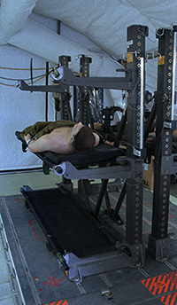

Recent News
Warehouse 3 is currently inactive while the contamination crew finishes their lockdown procedure.
Warehouses
There are 3 operational warehouses. Each can house up to 20 test subjects. But we can accommodate more if needed.
- Home
- Warehouse 1
- Warehouse 2
- Warehouse 3
- Warehouse 4
WAREHOUSE 1
Our main open-air restraining facility used for experiments that require groups to be exposed to the same conditions for long periods of time or a need to be able to move freely from subject to subject easily.
This location has massive temporary ventilation systems that are easily moved or altered to accommodate multiple experiments of varying sizes or tests that need multiple segregated groups.
Fully equipped with restraining racks and cots along with a supply of basic medical equipment for monitoring and administering various treatments. Additional supplies can be provided.